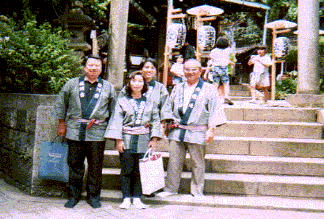
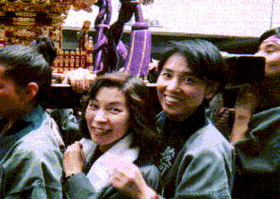

久保先輩から、神田会のメンバーに、1997年5月11日（日）に神田の太田姫神社の祭りがあり、そこで神輿をかつぐので参加して欲しいとのお誘い。でも、日曜日は皆さん家族サービスなどで忙しいようで、集まったのは、久保先輩と４７年卒の堀本くん、池田さん、中西さんの４人だけでした。
集まった４人は、日曜日にわざわざくるだけあってみんな気合いが入っており、特に池田さんはハッピ持参です。

神輿を担ぐ中西さんと、池田さん。しかしよく見ると、中西さんはぶらさがっているだけ。
かえって、みんなに迷惑をかけたようです。
神輿をかついで、町内を練るのですが、まるでマラソンの給水地点のように辻々で酒やつまみのふるまいがあり、堀本くんなどは、そのたびに飲むものだから、あっという間にできあがってしまいました。